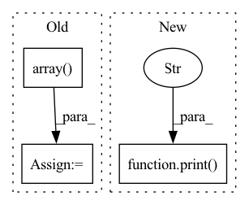

Pattern ID :18736

Before Change
optimizer.step()
duration += time.perf_counter() - tic
acc = np.array(acc_list).mean()
print(f"Epoch: {epoch} | Loss: {loss} | Acc : {acc}")
print(f"training time is {duration:.5}s")
After Change
optimizer.step()
duration += time.perf_counter() - tic
print(f"Epoch: {epoch} | Loss: {loss}")
else:
with torch.no_grad():
data = dataset[0]
data.to(self.device)
In pattern: SUPERPATTERN
Frequency: 4
Non-data size: 3
Instances
Fragment ID: 60935825
Project Name: divelab/dig
Commit Name: 7bc976472260abbe590320af2f499da668c5e0cb
Time: 2021-04-28
Author: 1161283769@qq.com
File Name: dig/xgraph/method/pgexplainer.py
M Class Name: PGExplainer
N Class Name: PGExplainer
M Method Name: train_explanation_network(2)
N Method Name: train_explanation_network(2)
M Parent Class: nn.Module
N Parent Class: nn.Module
M File Name: dig/xgraph/method/pgexplainer.py
N File Name: dig/xgraph/method/pgexplainer.py
M Start Line: 390
M End Line: 455
N Start Line: 581
N End Line: 622
'>
Before Change
if index % 1000 == 0:
print(f"Embedded {index} with {num_errors} errors")
final_embeddings = np.array(all_embeddings)
retrieved_indices = np.array(all_ids)
return final_embeddings, retrieved_indices
After Change
all_embeddings.append(embeddings)
if batch_ix % 10 == 0:
print(f"Embedded {batch_ix} batches with {num_errors} errors")
final_embeddings = np.concatenate(all_embeddings, axis=0)
retrieved_indices = np.array(all_ids)
return final_embeddings, retrieved_indices
'>
Fragment ID: 60935824
Project Name: bluebrain/search
Commit Name: 6eb30c8b3e77791ee4e407dd19d7a5e08fe5e132
Time: 2020-09-04
Author: jankrepl@yahoo.com
File Name: src/bbsearch/embedding_models.py
M Class Name: AnonimousClass
N Class Name: AnonimousClass
M Method Name: compute_database_embeddings(4)
N Method Name: compute_database_embeddings(3)
M Parent Class:
N Parent Class:
M File Name: src/bbsearch/embedding_models.py
N File Name: src/bbsearch/embedding_models.py
M Start Line: 287
M End Line: 309
N Start Line: 433
N End Line: 494
'>
Before Change
self.out_file = "_".join(
[self.name, calculator, basis]) + ".hdf5"
self.atoms = np.array(self.atoms).astype("S")
dump_to_hdf5(self, self.out_file)
After Change
[self.name, calculator, basis]) + ".hdf5"
if os.path.isfile(self.hdf5file):
print("Reusing data from ", self.hdf5file)
self.basis = self.load_basis()
else:
calc = {"adf": CalculatorADF,
'>
Fragment ID: 60935826
Project Name: nlesc-jcer/qmctorch
Commit Name: 4b0ffdef5dbd2b1d2b3cb91098e6b496930d6f69
Time: 2020-04-16
Author: nicolas.gm.renaud@gmail.com
File Name: qmctorch/wavefunction/molecule.py
M Class Name: Molecule
N Class Name: Molecule
M Method Name: __init__(7)
N Method Name: __init__(7)
M Parent Class: object
N Parent Class: object
M File Name: qmctorch/wavefunction/molecule.py
N File Name: qmctorch/wavefunction/molecule.py
M Start Line: 21
M End Line: 46
N Start Line: 35
N End Line: 53
'>
Before Change
range=final_state_range, p=np.inf
)
input_constraint = constraints.LpConstraint(p=np.inf, range=None)
final_state_range2 = np.array(
[ // (num_inputs, 2)
[6.5, 7.0], // x0min, x0max
[-0.25, 0.25], // x1min, x1max
]
)
output_constraint2 = constraints.LpConstraint(
range=final_state_range2, p=np.inf
)
// output_constraint = [output_constraint2,output_constraint1]
After Change
)
analyzer_info_list[0]["save_name"] = analyzer_info_list[0]["save_name"] + ".png"
// import pdb; pdb.set_trace()
print("examples_backward:", args.show_convex_hulls)
if args.show_plot or args.save_plot:
analyzer.visualize(
backprojection_sets,
'>
Fragment ID: 60935822
Project Name: mit-acl/nn_robustness_analysis
Commit Name: 63e79909e36636ad1ba6c548408a853c1564488d
Time: 2022-06-08
Author: mfe@mit.edu
File Name: nn_closed_loop/example_backward.py
M Class Name: AnonimousClass
N Class Name: AnonimousClass
M Method Name: main(1)
N Method Name: main(1)
M Parent Class:
N Parent Class:
M File Name: nn_closed_loop/example_backward.py
N File Name: nn_closed_loop/example_backward.py
M Start Line: 14
M End Line: 327
N Start Line: 14
N End Line: 320